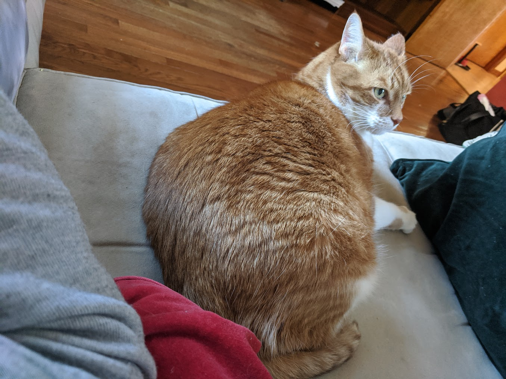
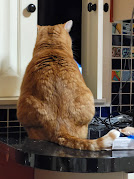
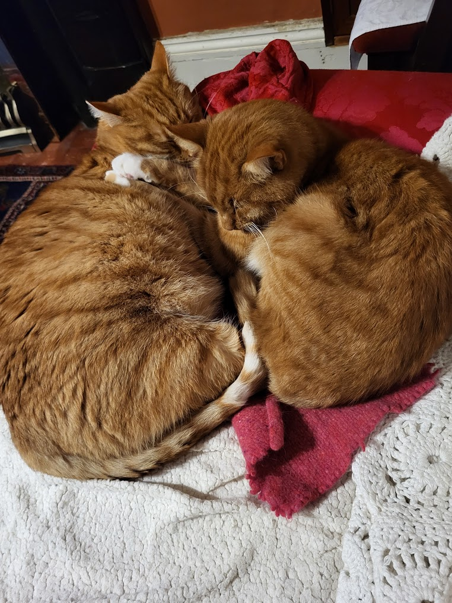
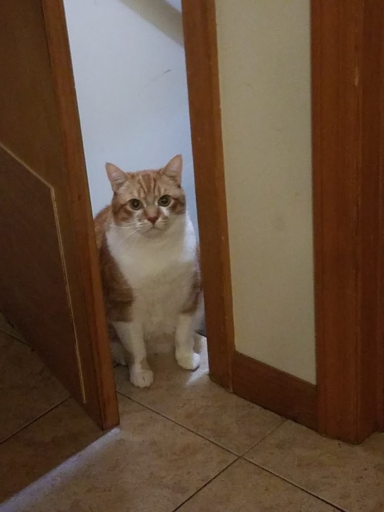
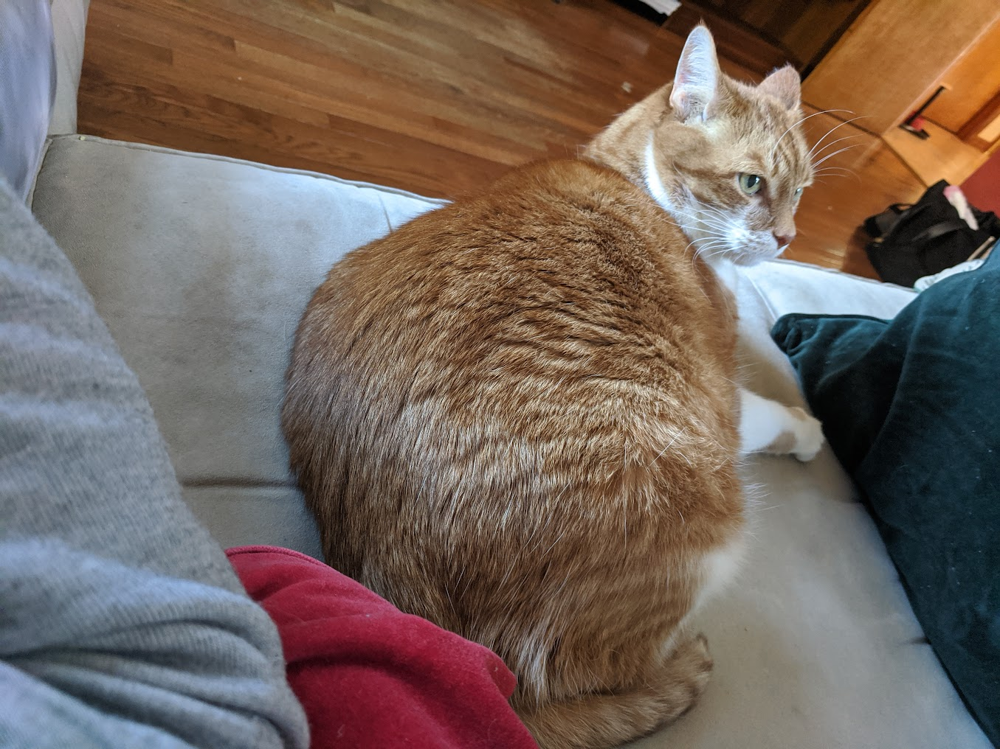
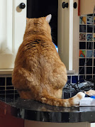
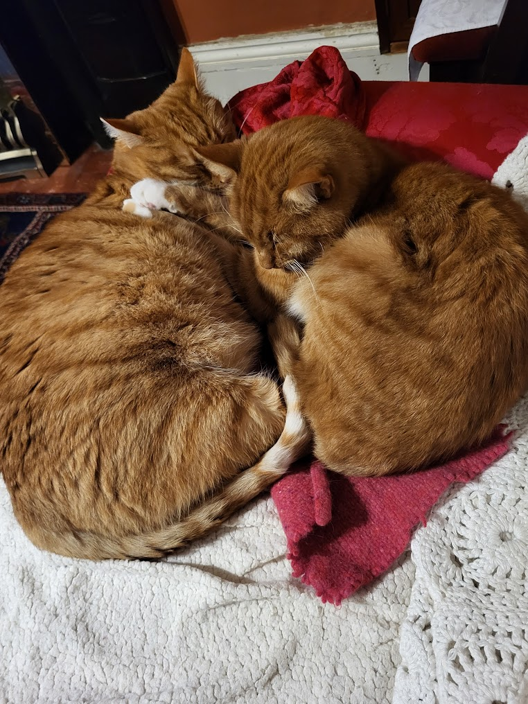
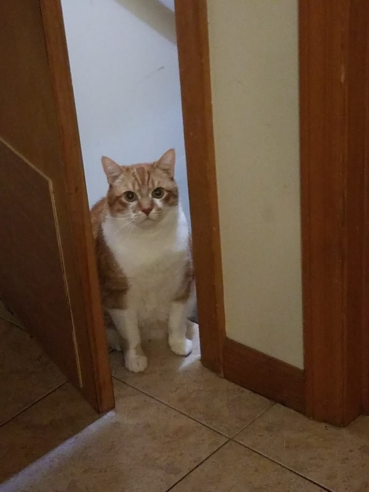

Fatty Mc Fat Fat
Fatty was born on July 4th 2008. He was first called Wendy when we first found him on a farm as a tiny stray kitten. At his 6 month check up with the vet, the vet informed us that Wendy was a boy so we renamed him Simba. Within one year, Simba was so enormous that we renamed him again to Fatty Mc Fat Fat. The vets office loved having him for his visit and had a right old giggle calling his name out in the waiting room.
 






